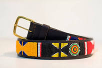
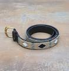

Featured Belts

Masai Beaded Belt
Handcrafted with colorful beads

Leather Masai Belt
Genuine leather, adorned with beads
About Masai Belts
Discover the rich culture and craftsmanship behind Masai belts. Each belt is a unique piece of art, reflecting the traditions and heritage of the Masai people.